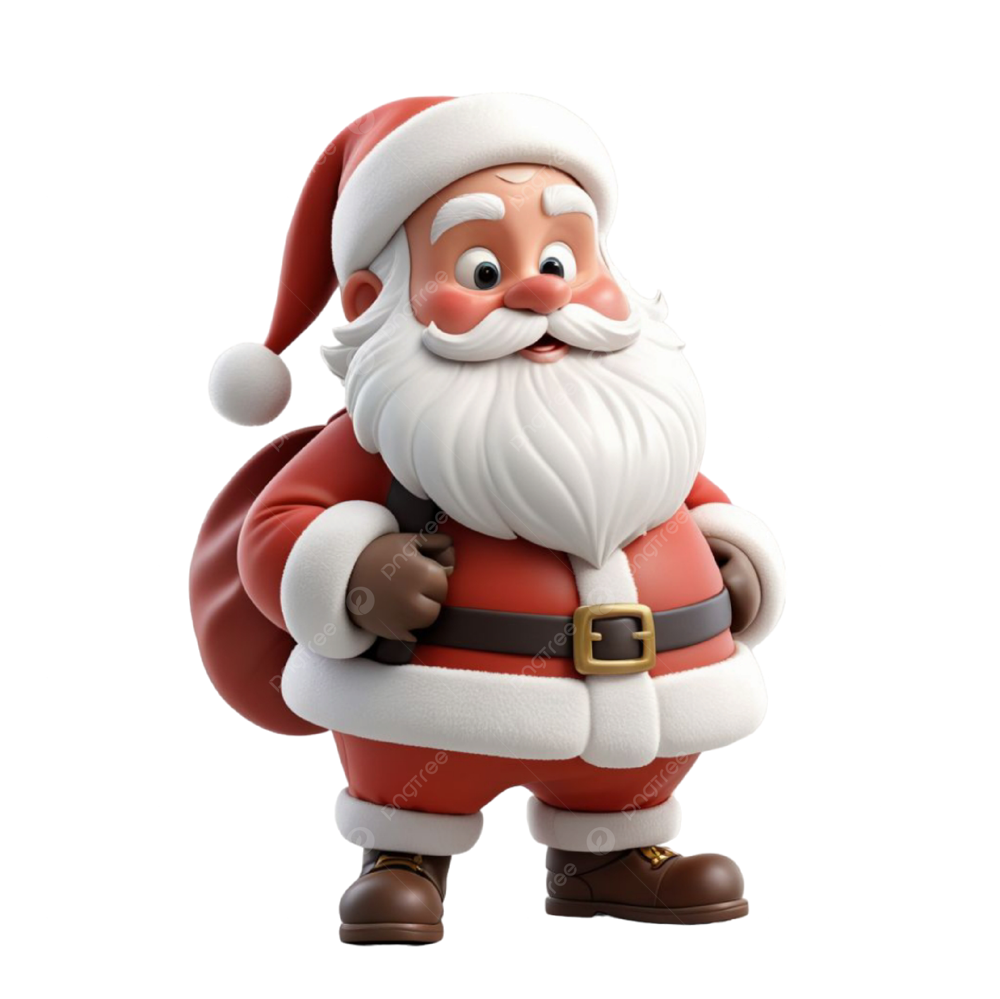

크리스마스에 대해
- 크리스마스란?
- 크리스마스란?
- 크리스마스는 그리스도(Christ)와 가톨릭의 예배 의식인 미사(mass)의 합성어이다. 서양에서 시작된 크리스마스는 12월 24일부터 1월 6일까지 예수의 성탄을 축하하는 절기다. 4세기 당시 사람들이 그리스도의 수난 날짜인 3월 25일을 천사 가브리엘이 마리아를 찾아와서 예수의 탄생을 알렸다는 성령으로 내려온 날, 즉 수태고지일로 보고 그로부터 상징적인 9개월간의 잉태 이후인 12월 25일을 탄생일로 지키는 그리스도론을 바탕으로 한다.
- 산타클로스
- 아이들에게 선물을 주는 산타클로스는 선행으로 유명한 ‘성 니콜라오’로부터 기원한 것으로 알려져 있다. 12세기 프랑스의 수녀들이 성 니콜라오 축일 전날인 12월 5일 가난한 아이들에게 선물을 주기 시작한 것에서 유래했다고 하며, 유럽의 로마가톨릭 국가들에서는 성인의 축일인 12월 6일에 가족 중 한 명이 성 니콜라오의 분장을 하고 나타나 착한 어린이를 칭찬하는 전통이 있었다.
- 캐롤
- 크리스마스 캐럴은 캐럴의 한 종류로, 크리스마스에 야외에서 신을 찬송하기 위해 부르는 민중적 종교가로 14세기 영국에서 유래됐다. 캐롤은 원래 민중이 야외에서 함께 노래하는 즐거운 성격의 종교적인 노래였다.
- 그거 아세요?
- 크리스마스는 1945년 해방을 맞으며 미군정에 의해 크리스마스가 처음으로 공휴일이 되었다.
- 크리스마스 트리 문화는 독일에서 시작되었다.
- 성탄절 풍습이 스트레스를 해소하고, 신경을 활성화하는 등 건강 측면에서 삶의 활력소가 되고 있다는 연구 결과가 밝혀졌다.
